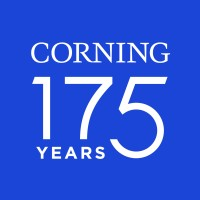
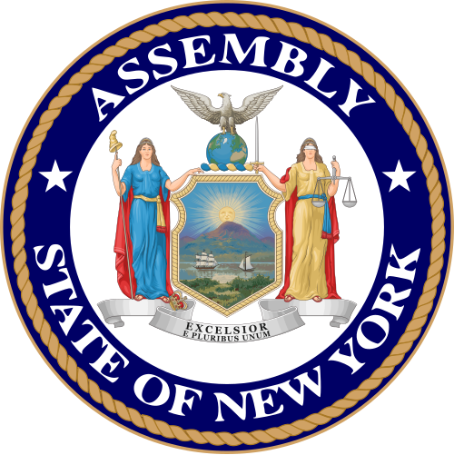
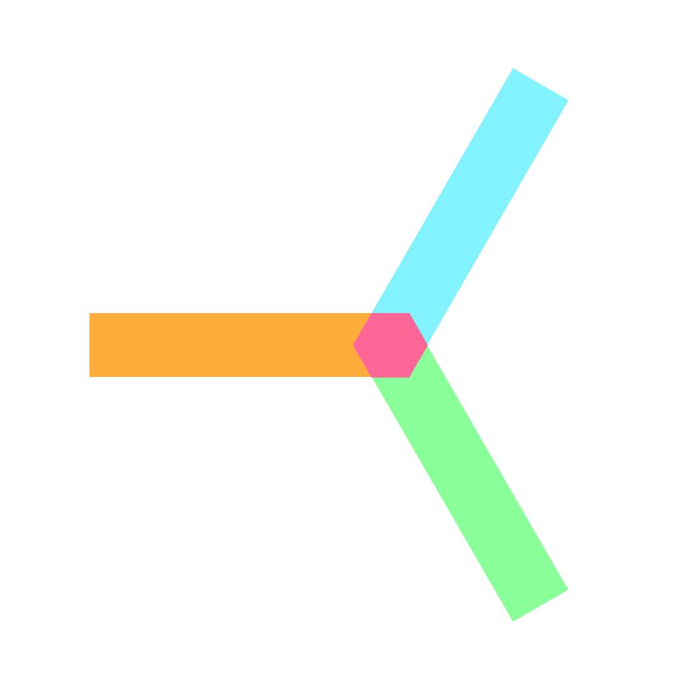
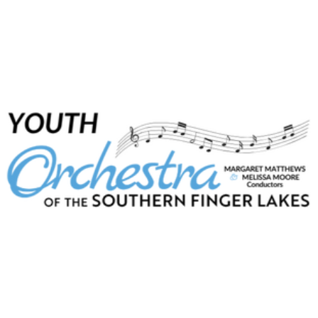
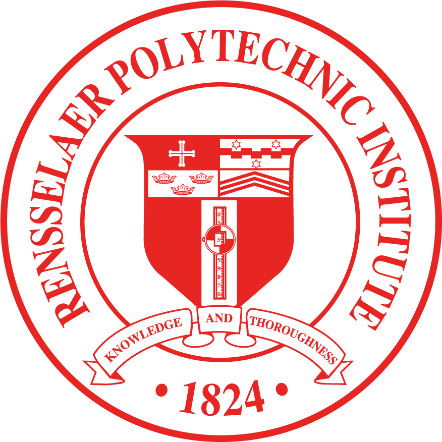
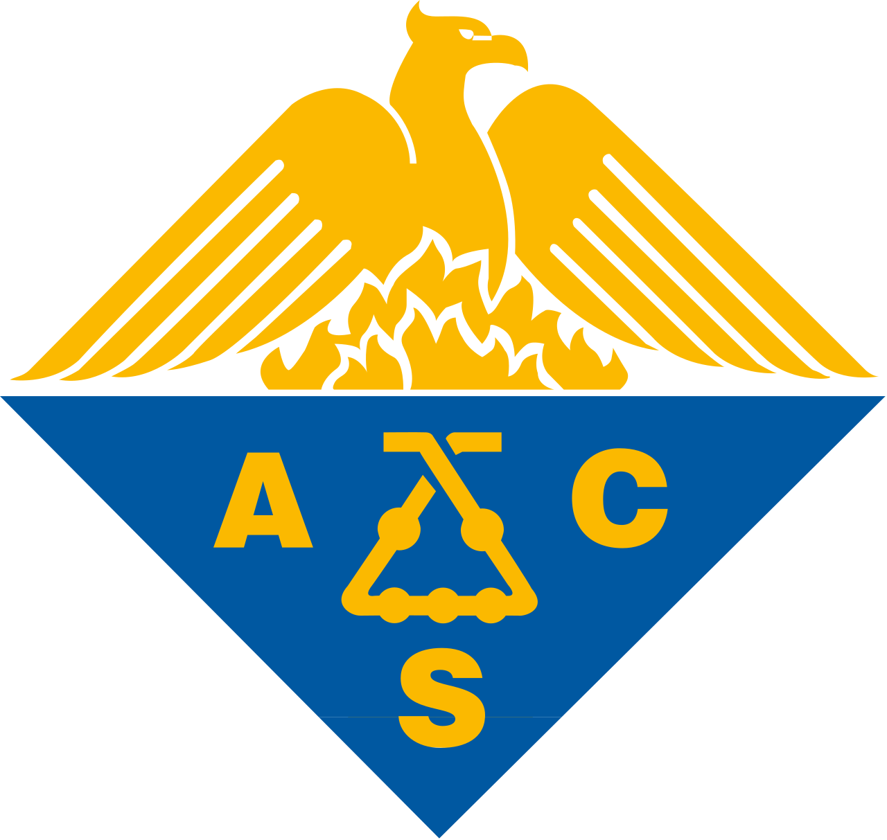
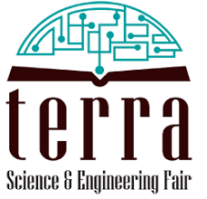
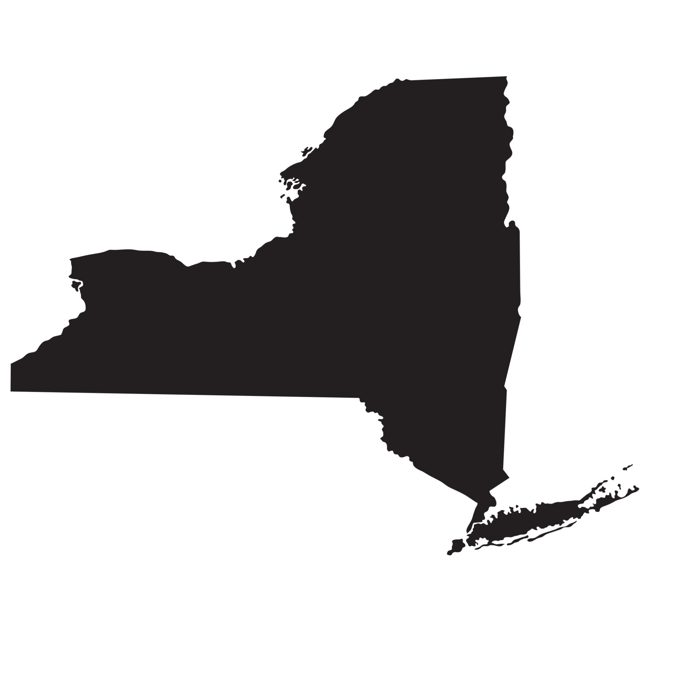

Derek Guo
Note
Thank you so much again for taking the time and effort to write a letter of recommendation for me!
I know that this is an exhaustive list and that it would of course be unfeasible to include all (or even most) of the items on it.
Hopefully, it simply provides some information about my experiences beyond the classroom. Many of the activities and awards described below will also appear elsewhere in my application, so I imagine they are most meaningful when included merely to support the personal observations and anecdotes you have gained from teaching and interacting with me directly.
Items marked with red asterisks are typically more recently-started; the asterisks indicate that I do not have much of a certain description for the item yet, but I will provide updates here as soon as they become available. If any items on this list are unclear, I would be more than happy to provide clarification.
Finally, my intended major is Electrical/Computer Engineering, and my top choice universities include Stanford University, UC Berkeley, Harvard University, the Georgia Institute of Technology, and the University of Pennsylvania (although I will apply to numerous other universities too).
Thank you again,
Derek
Highlighted Extracurriculars

Soft Matter Physics Researcher
- Developing computational models with Professor Xin Yong's SaIL Lab to study the effects of periodic deformation of a polymer network on the diffusion of a nanoparticle.
- Conducted a thorough literature review and subsequently developed design parameters to be modeled via computational simulation.
- Working with the Python programming language, LAMMPS, and OVITO to run and analyze simulations.
- Maintaining regular communication with the Prof. Yong and a SaIL Lab PhD candidate through scheduled progress meetings to present findings and align project goals.

**Optics Intern with Corning Incorporated**
-
All I know at this time is that I'll likely be spending most of my time in the Optical Properties Laboratory. When I have more details about my assignment and my responsibilities, I will update this section as soon as possible.

**Nuclear Energy Reform Advocate**
-
This involves an original statewide legislative proposal that two peers and I did research for and drafted. It is aimed at supporting the United States’s eventual transition to a closed uranium fuel cycle, which has potentially huge environmental, economic, and security benefits.
On June 25, 2026, we met with Assemblyman Phil Palmesano. We have been invited to advance our proposal to more state officials (such as the Governor's Deputy Secretary of Energy) and groups, either in Albany or virtually. It may also be arranged for us to visit the Brookhaven National Laboratory (located in downstate New York, it specializes in nuclear physics), which is a critical component of our proposal.

Interactive Computer Architecture Educational App
Solo Fullstack Developer
- Designed and developed a full-stack education platform demonstrating the emergence of computing from CMOS transistors to functioning basic processors.
- Implemented a digital logic simulation engine supporting combinational and sequential circuits, including adders, registers, memory structures, and a simplified CPU that users can interact with via a drag-and-drop user interface.
- Proudly 100% human-coded, 0% AI!
- **Finished app and its name will be available late August 2026**
I started this project because I wanted a way for students to understand how computers emerge from individual transistors (the most fundamental unit in computing); when I used similar platforms myself, which usually start users off with logic gates or adders, I found myself wondering how those components function at a more fundamental level.

Corning-Painted Post High School Physics Club
Founder & President
- Planned and led interactive meetings and events to increase students' understanding and appreciation of physics and its applications.
- Coordinated the first annual lab visit in November 2025, with 18 students visiting four cutting-edge quantum computing labs at the University of Rochester.
- Helped students learn about electrical circuit basics in a hands-on manner by using Arduino sets.
- Planned and carried out a model rocket launch in May 2026 that allowed students to experience physics principles in a fun, hands-on way.
Notable events:

Youth Orchestra of the Southern Finger Lakes
Concertmaster
- Performed in three public concerts annually, including a side-by-side with the professional Orchestra of the Southern Finger Lakes.
- Led the first violin section as well as guiding the entire orchestra in deciding bowings, interpretation, providing supplementary cues, etc.
CPPHS Varsity Tennis
Co-Captain
- Helping to lead a team of 26, many of which are newcomers, to find a balance between fun and discipline while fostering growth and team unity.
- Placed third in Section IV Class A singles in 2025, qualifying for NYSPHSAA State Qualifiers, and fourth in 2026.
Education
Corning-Painted Post High School
Corning, NY, USA
-
View/Download Transcript
**An updated transcript containing final grades from 11th grade will be uploaded at the end of June.**
Self Study
AP Chinese
AP Computer Science A
AP Physics 1
AP Physics 2
AP United States History
University of North Dakota
Remote
Introduction to Linear Algebra
Awards

Rensselaer Medal
Issued by the Rensselaer Polytechnic Institute
- Recognized as a top math and science high school junior with outstanding achievement in STEM.

United States National Chemistry Olympiad (USNCO) National Exam Qualifier
Issued by the American Chemical Society
- For the second time, among just ~1,000 students nationwide to advance to the national exam in one of the most prestigious chemistry competitions in the United States.

Bobbi Alcock Founders Award in Chemistry
Issued by Terra Science and Education
- Awarded for the best project in chemistry at TRFSEF, a competitive ISEF-affiliated science fair, for a project studying a novel area of nanoparticle diffusion dynamics.
W. Varick Nevins III Math Competition Senior Division Co-Champion
Issued by Alfred University
- Highest-scoring upperclassman (two-way tie), and highest overall unofficially, out of roughly 100 competitors from western NY, winning a monetary prize.
United States National Chemistry Olympiad (USNCO) National Exam Qualifier
Issued by the American Chemical Society
- Among just 918 students nationwide to advance to the national exam in one of the most prestigious chemistry competitions in the United States.
W. Varick Nevins III Math Competition Sophomore Division Champion
Issued by Alfred University
- Highest-scoring underclassman, and third highest overall unofficially, out of roughly 100 competitors from western NY, winning a monetary prize.
Other Extracurriculars
NYSSMA All-State String Orchestra
First Violin
- Selected among a vast applicant pool as one of the top student violinists in the extremely competitive state of New York—was the only string player from a 5-county region to be selected for any All-State ensemble.
- Performed live at the world-renowned Eastman School of Music under the baton of acclaimed cellist Anthony Elliott, a Professor Emeritus of Music at the University of Michigan.
CPPHS Varsity Swimming
- Contributed significantly to multiple successful seasons since joining in 8th grade, including 2023 and 2025 Section IV Class A team championships.
- Scored an average of 23.75 points at four Section IV Class A Championships (average individual contribution on team is typically ~15 points)
NYSSMA Zone 15 Area All-State String Orchestra
Concertmaster
- Selected for this honors ensemble in a competitive process as the top student violist among several counties in New York State.

Upstate New York ARML Team
"Team Manifold" Captain
- Led a team of some of the top math competitors from all over Upstate New York to compete at one of the largest and most competitive secondary school mathematics competitions in the United States.